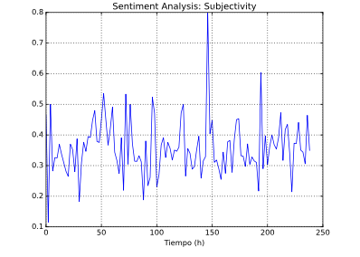
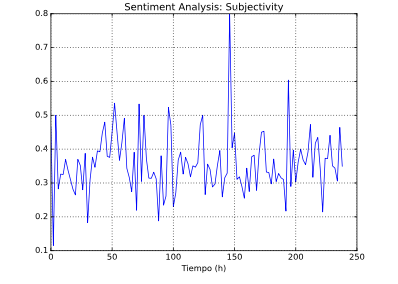
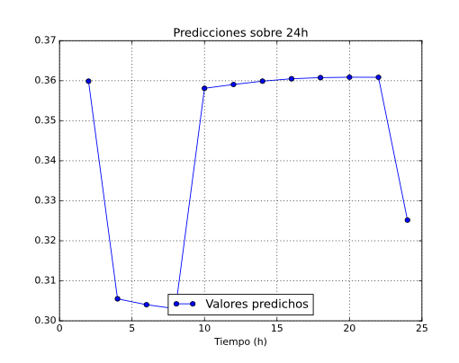
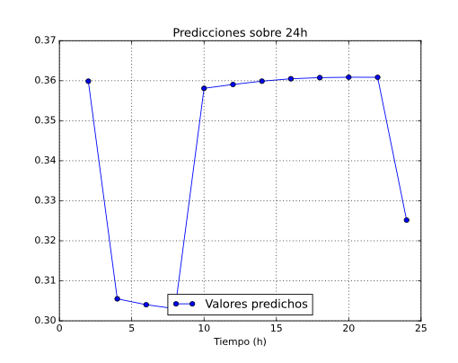

ANÁLISIS DE RESULTADOS
En esta sección se mostrarán los análisis y estimaciones obtenidos mediante el uso de machine learning.


 

Los resultados de cada tweet se devuelven en una dupla de valores que representan la polaridad
que se mide con un número de -1 a +1 (siendo polaridad negativa valores inferiores a 0 y positiva
superiores a 0) y la subjetividad de 0 a +1 (siendo 0 objetivo y +1 subjetivo).
Para terminar la parte de procesado se agrupan los distintos tweets en intervalos de dos
horas.
Estos tweets agrupados en intervalos de dos horas, poseen cada uno una medida de su polaridad y de su subjetividad. Para cada intervalo realizamos la media de estos valores. Posteriormente
guardamos en 3 archivos distintos los tweets referentes a ese día, los resultados de la
polaridad y los de la subjetividad. Estos archivos son los que utilizarán la red neuronal para su
entrenamiento.
Dados los datos obtenidos por cada día en periodos de 2 horas referentes a los dos tipos
de features estudiados para los tweets analizados procedemos a realizar predicciones en base al
conjunto de datos recopilados.Dado nuestro dataset total lo hemos dividido en dos partes, una de entrenamiento para la
red neuronal y otra parte de test, con la que se pretende evaluar la capacidad de predicción de la
misma sobre datos conocidos (conjunto de test).
Sobre nuestro datos de entrenamiento de tipo coma flotante, aplicamos una función de escalado
dada por la librería scikit-learn (librería de software libre para tareas de machine learning
en Python) con la que mapeamos nuestros datos en el rango de -1 a 1. Matemáticamente realiza
la siguiente transformación de los datos unidimensionales proporcionados tal y como indica las
páginas oficiales de sus desarrolladores.Ir al sitio web
Imágenes->Dataset para el feature Polarity a la izquierda y Subjectivity a la derecha.
 

En la etapa de forecasting empleamos la red neuronal entrenada para predecir
los valores futuros para ambos features en el rango de 1 día, un total de 12 valores, ver figuras 12
y 13. Para ello seguimos la misma metodología empleada en la etapa de test y entrenamiento solo
que ahora inicializaremos nuestra ventana de datos con los últimos datos de nuestro dataset total
y sucesivamente iremos desplazando la ventana muestra a muestra conforme predecimos los valores
referentes al día inmediatamente después del que se tiene constancia en nuestra base de datos.Se observa que la red neuronal responde correctamente delvolviendo valores acotados en el
rango de valores propios de cada ’feature’ estudiado y siguie fielmente la tendencia de los datos
inmediatamente anteriores a los predichos.
Imágenes->(Datos predichos para el día 2 de Enero, Polarity a la izquierda y subjectivity a la derecha)


En esta parte estudiamos el rendimiento de los datos predichos por la red neuronal, testeando
su eficacia. Nos basamos en el mismo modo de operación que la etapa de entrenamiento,
pero esta vez, haremos uso de nuestra red ya entrenada por la que pasaremos (operación de foward)
los datos referentes a la última ventana de datos de entranamiento para, sucesivamente ir
prediciendo y desplazando la ventana iteradamente muestra a muestra.En las figuras se muestran los resultados predichos por la red neuronal frente a los
datos de test para ambos features:
Vemos que a pesar de no presentar una fuerte relación los datos predichos frente al dataset
empleado para el testeo de la misma, los datos predichos oscilan en rangos aceptables.
Imágenes->(Etapa de test para Polarity a la izquierda y Subjectivity a la derecha)